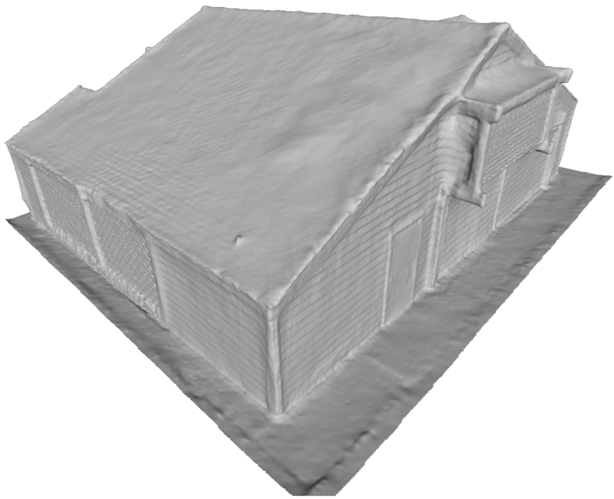
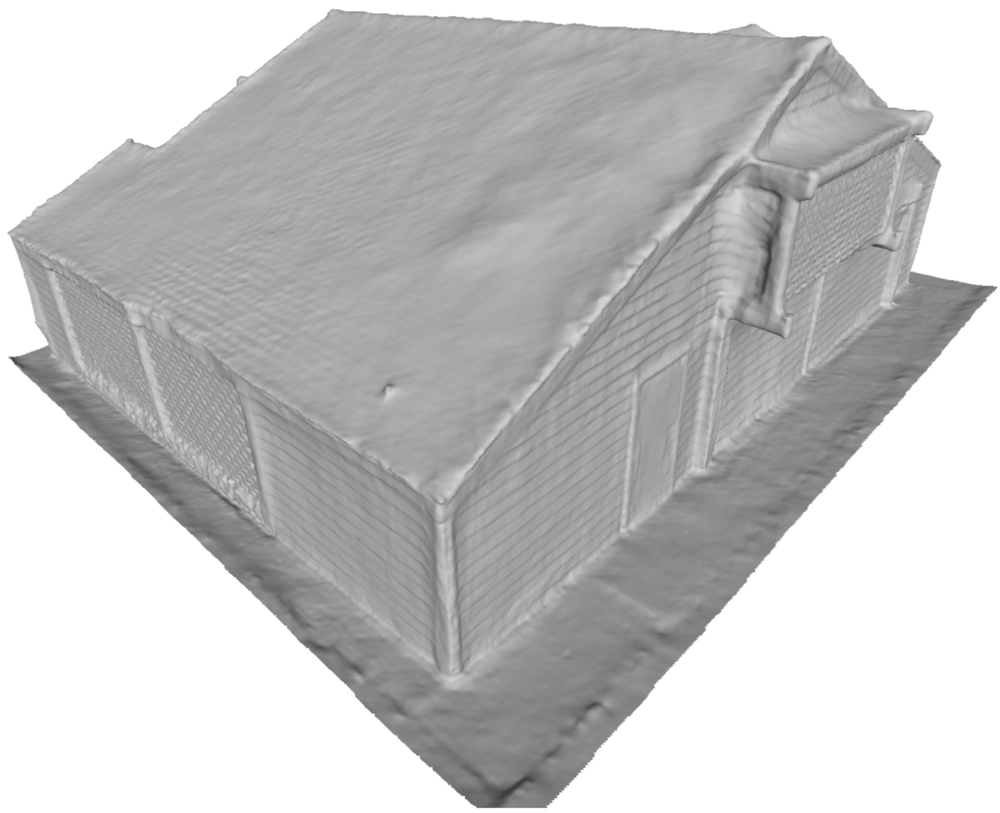

TL;DR: We introduce GSDF, a dual-branch architecture that combines the benefits of 3D Gaussian Splatting (3DGS) with neural Signed Distance Fields (SDF) to boost both rendering and reconstruction quality.
From randomly initialized points, GSDF can arrive better rendering quality.
Method Overview
Overview of Dual-branch Guidance. Our dual-branch framework includes a GS-branch for rendering and an SDF-branch for learning neural surfaces. This design preserves the efficiency and fidelity of Gaussian primitive for rendering while accurately approximating scene surfaces from an SDF field adapted from NeuS. Specifically: (1) The GS-branch renders depth maps to guide SDF-branch ray sampling, querying absolute SDF values |s| and sampling points within 2k|s| (e.g., k = 4). (2) Predicted SDF values guide GS-branch density control, growing Gaussians near surfaces and pruning deviated ones. (3) Mutual geometry consistency is enforced by comparing depth and normal maps from both branches, ensuring coherent alignment between Gaussians and surfaces.
 
